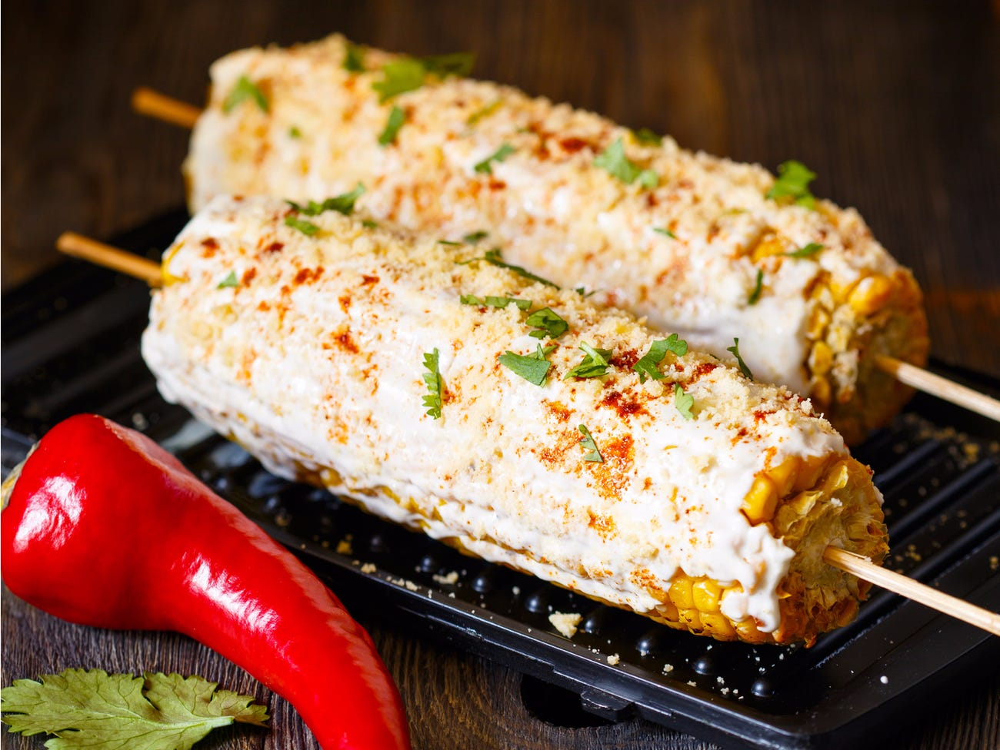
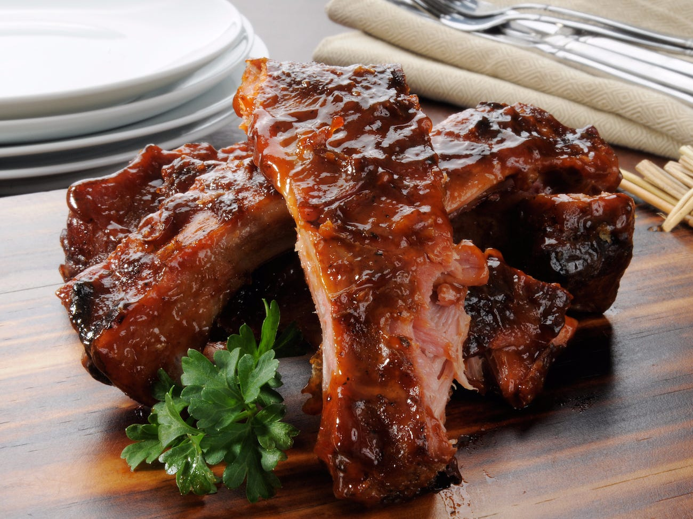
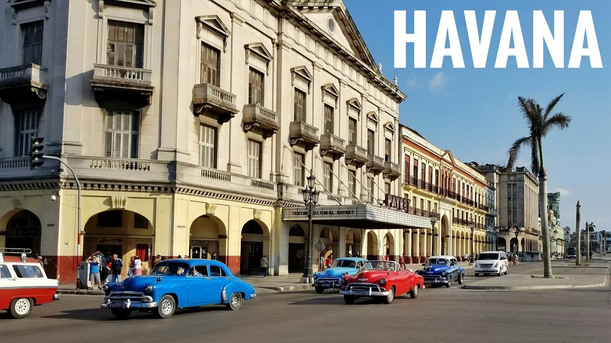

Elote

Elotes are originally Mexican, but many Cuban restaurants, such as Café Habana in New York, have made it their own.
It doesn’t matter whether you choose the dish at a Cuban restaurant, Mexican restaurant, from a street vendor or make Elote at home, it’s fabulous.
While it may seem like nothing more than just grilled sweet corn with toppings, I assure you, it’s far more than just that. Not all fabulous foods come from the kitchens of great chefs and not all great chefs are in the kitchen of famous restaurants.
Some of the most delicious foods are part of rich ethnic culture and prepared for celebrations or family gatherings. Elote is one of those foods.
Flan

Few desserts are as synonymous with Latin culture as flan, the soft caramel custard that’s served everywhere from Mexico to the Caribbean. In Cuba, where restaurant owners struggle to obtain a consistent supply of fresh food, “flan is something they almost always have the ingredients for,” says author and photographer Megan Fawn Schlow. Her new book, Paladares: Recipes Inspired by the Private Restaurants of Cuba, written with Anya von Bremzen, details the lengths to which the owners of paladares will go to adapt traditional recipes.
Though flan is made with fresh milk in Mexico and much of central America, in Cuba, it’s made with evaporated and condensed milk from cans. The canned dairy is more economical, but as Schlow notes, essential because in Cuba “fresh milk is usually reserved for kids under the age of seven.” As an added bonus, the evaporated and condensed milks yield a thicker, creamier custard.
Costillitas

Pork ribs (costillas) / baby back ribs (costillitas) which are marinated and served with a mix of sour orange juice, lime juice, oregano, garlic, and olive oil. They taste sweet and tangy at the same time and are simply delicious.
Havana

Here's a picture of one of Dominican Republic's most popular location: